Overview
Form. Function. Forever.
Forma is a contemporary furniture brand system built around simplicity, functionality, and timeless design. This project expands across website, social media, outdoor advertising, packaging, and logistics touchpoints.
The identity language stays warm and architectural, using rich photography, quiet typography, and a restrained materials palette to express modern living with clarity.
Brand identity, website direction, packaging system, and retail applications.
Logo, collateral, website UI, campaign art, shipping assets, and environmental graphics.
Translate a furniture brand into one coherent digital and physical ecosystem.
Stationery Collection
A collection of branded notebook covers that extends Forma's visual identity through bold typography, geometric patterns, and product photography.
The designs create a consistent visual system across everyday brand materials.
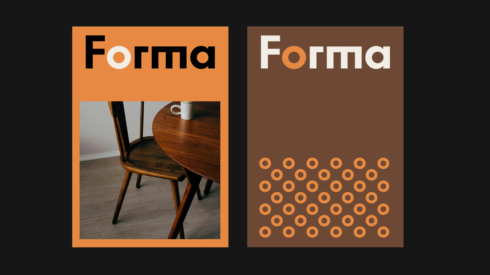
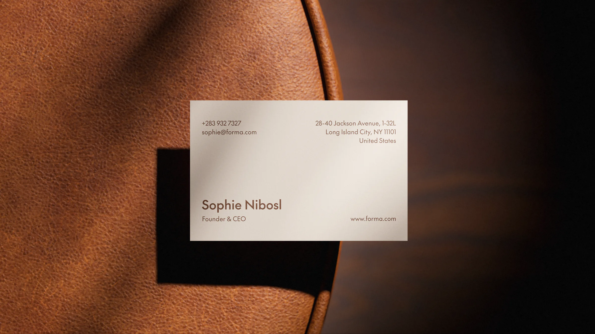
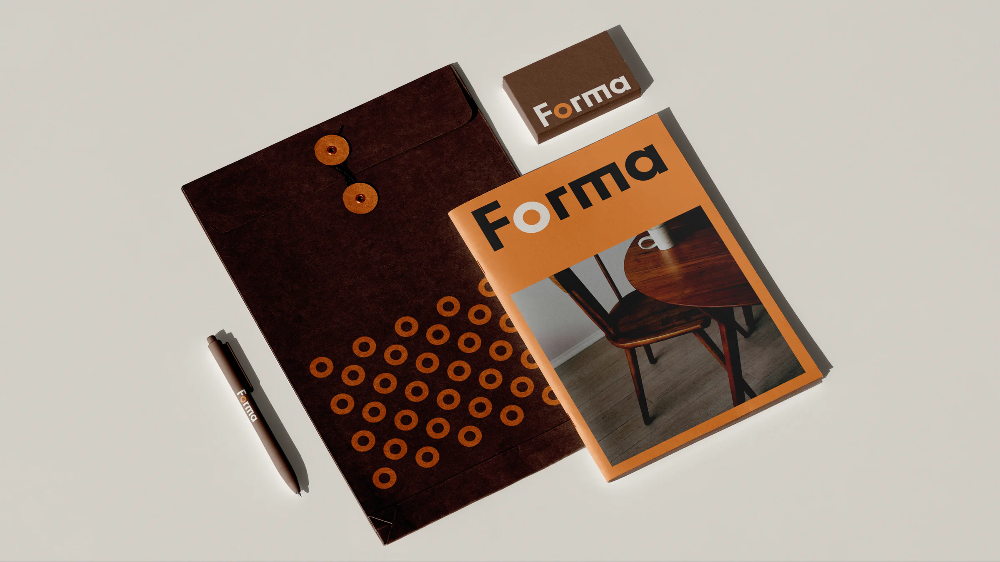
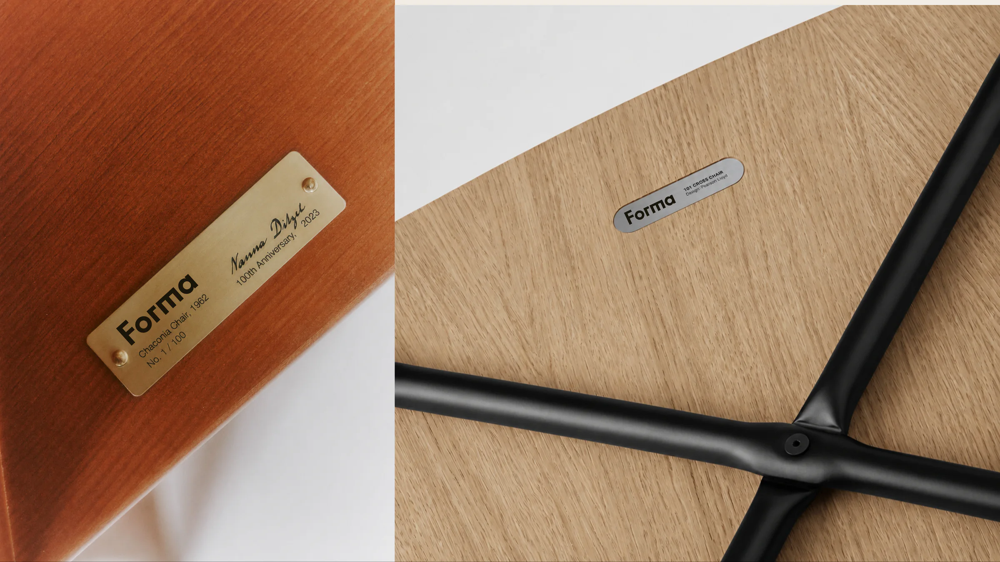
Posters
A series of brand posters that captures Forma's timeless aesthetic through warm photography, clean typography, and minimalist composition.
Each poster highlights the craftsmanship, natural materials, and quiet elegance of the furniture collection.
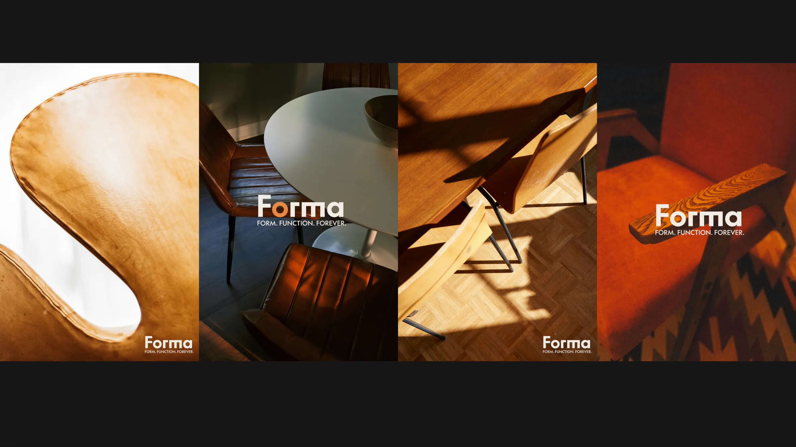
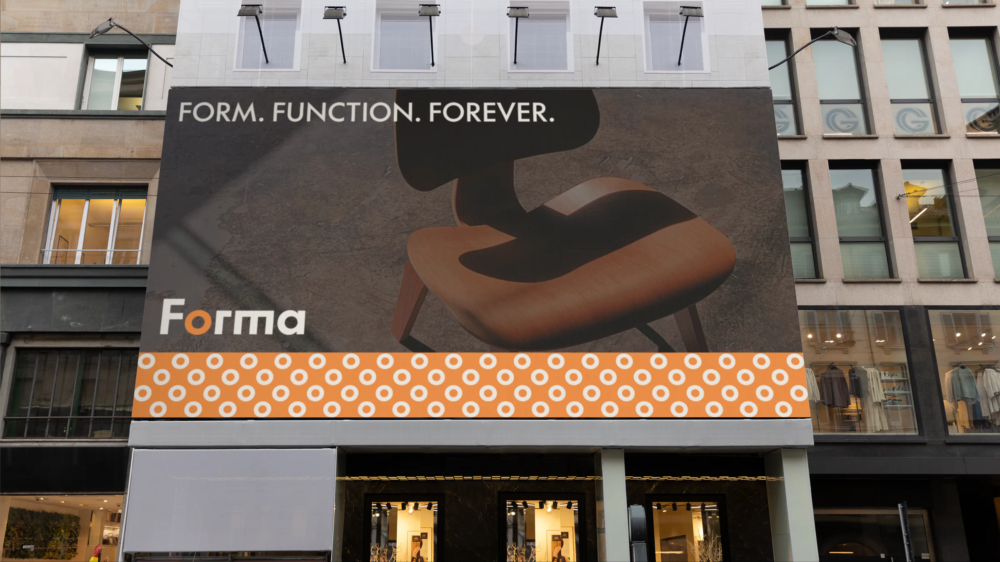
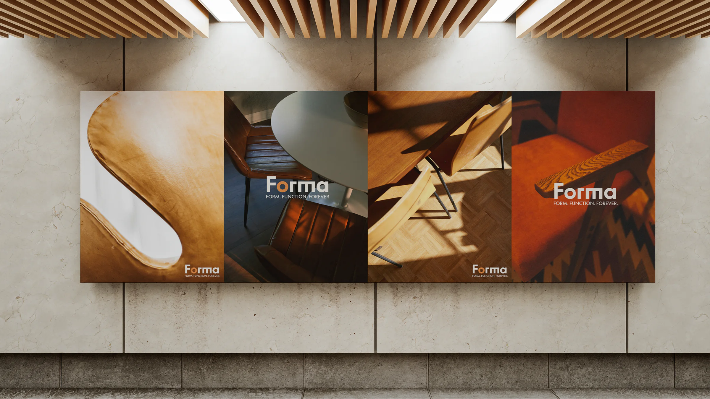
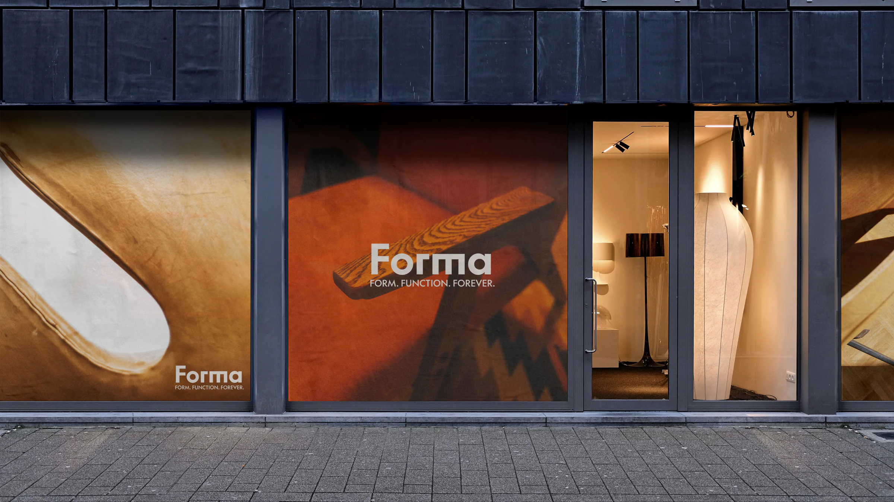
Website
The digital experience is designed with the same principles that guide our furniture: simplicity, functionality, and timeless design.
Through a balance of content, photography, and typography, the website communicates the Forma aesthetic while providing a seamless user experience across all devices.
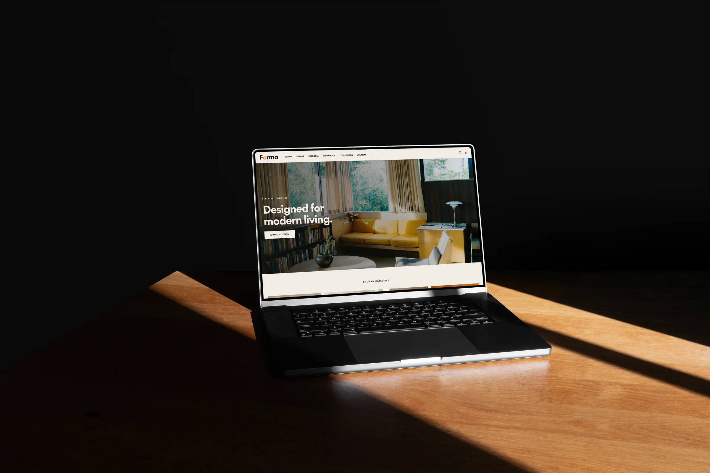
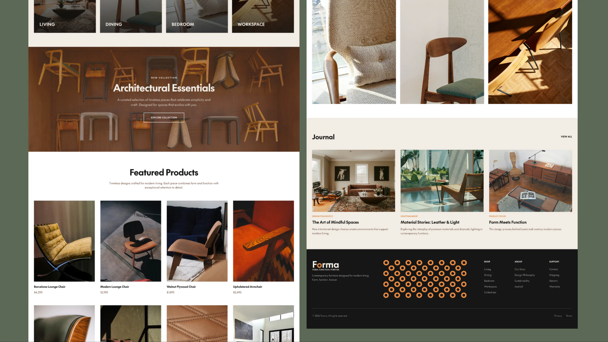
Digital Touchpoints
Social Media
Rather than separating brand and interface, the project keeps them aligned across desktop pages, landing views, and social storytelling.
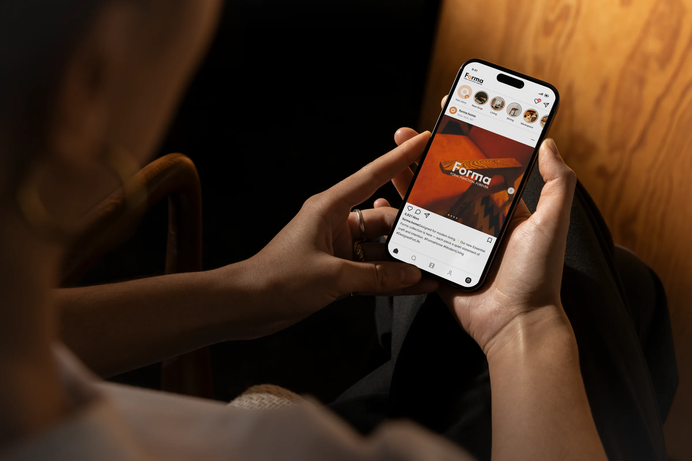
Packaging
Boxes, tape, and surface labeling are understated in the guideline. The visual language is consistent, but never louder than the furniture it supports.
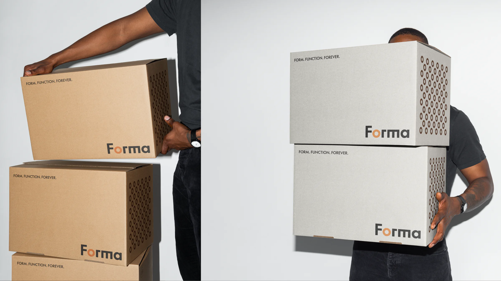
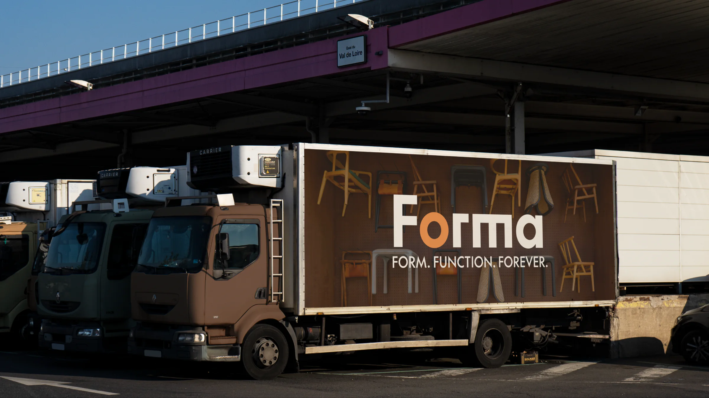
Logistics
A cohesive packaging system designed to extend Forma's visual identity across shipping and logistics. AI was used to generate the warehouse visualization based on my original packaging and branding design.
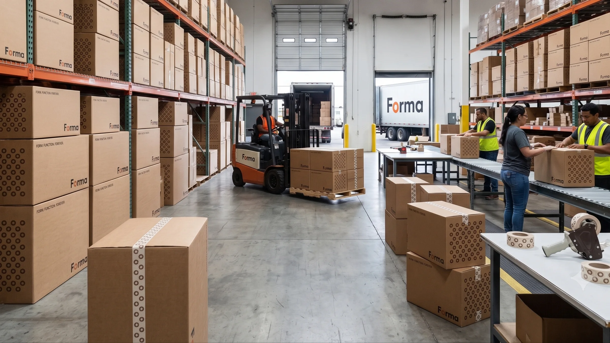
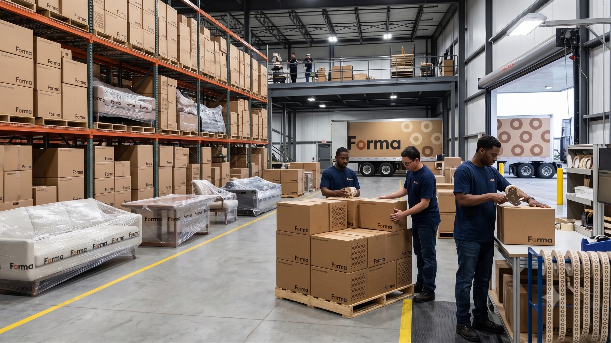